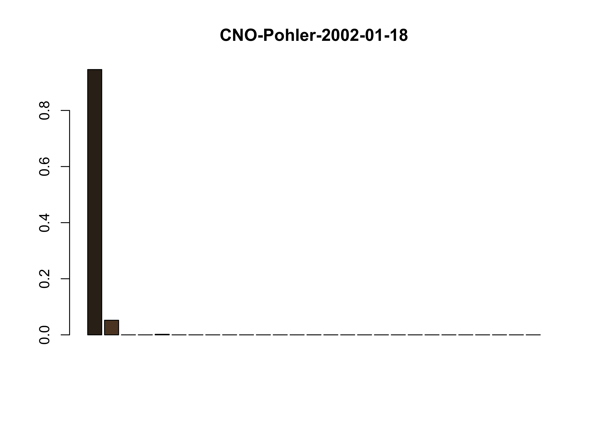

# compare colors
library(here)
library(colordistance)
library(recolorize)
library(tidyverse)
library(vegan)
library(ape)
library(ggConvexHull)
library(wesanderson)
# get image paths
images <- colordistance::getImagePaths('out')
# generate color distance matrix
cdm <- imageClusterPipeline(images)
|
| | 0%
|
|== | 3%
|
|===== | 7%
|
|======= | 10%
|
|========= | 13%
|
|============ | 17%
|
|============== | 20%
|
|================ | 23%
|
|=================== | 27%
|
|===================== | 30%
|
|======================= | 33%
|
|========================== | 37%
|
|============================ | 40%
|
|============================== | 43%
|
|================================= | 47%
|
|=================================== | 50%
|
|===================================== | 53%
|
|======================================== | 57%
|
|========================================== | 60%
|
|============================================ | 63%
|
|=============================================== | 67%
|
|================================================= | 70%
|
|=================================================== | 73%
|
|====================================================== | 77%
|
|======================================================== | 80%
|
|========================================================== | 83%
|
|============================================================= | 87%
|
|=============================================================== | 90%
|
|================================================================= | 93%
|
|==================================================================== | 97%
|
|======================================================================| 100%
# replace NAs with 0
cdm[is.na(cdm)] = 0
# export color distance matrix
write.csv(cdm, file = "distance_matrix.csv")
# import qual data
hfesp.data <- read.csv('qdata.csv',
header = TRUE,
as.is = TRUE)
# import color distance matrix
c.data <- read.csv("distance_matrix.csv",
header = TRUE,
as.is = TRUE)